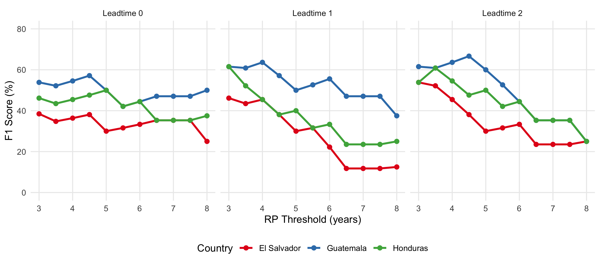
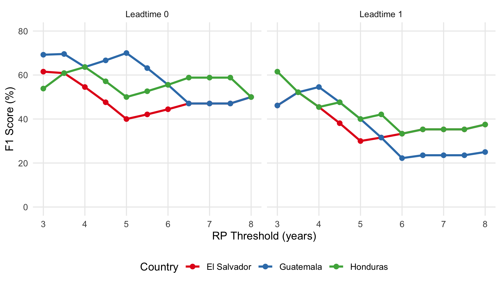
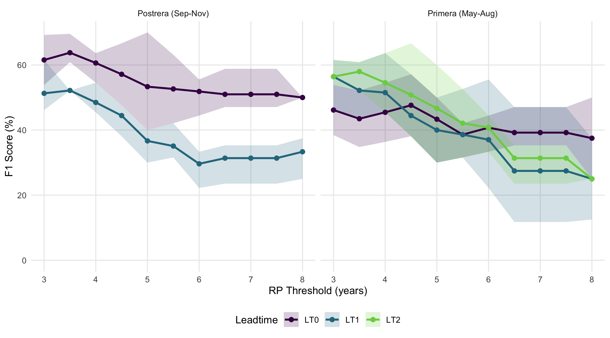
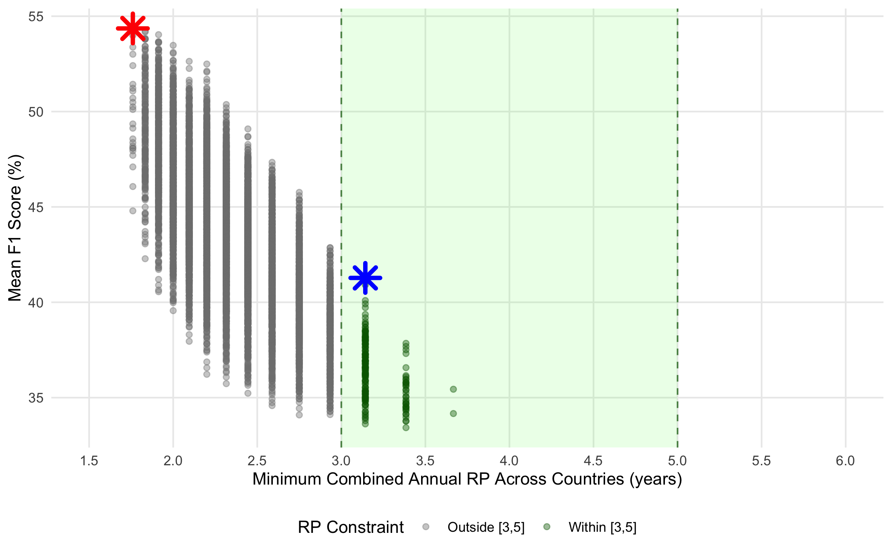
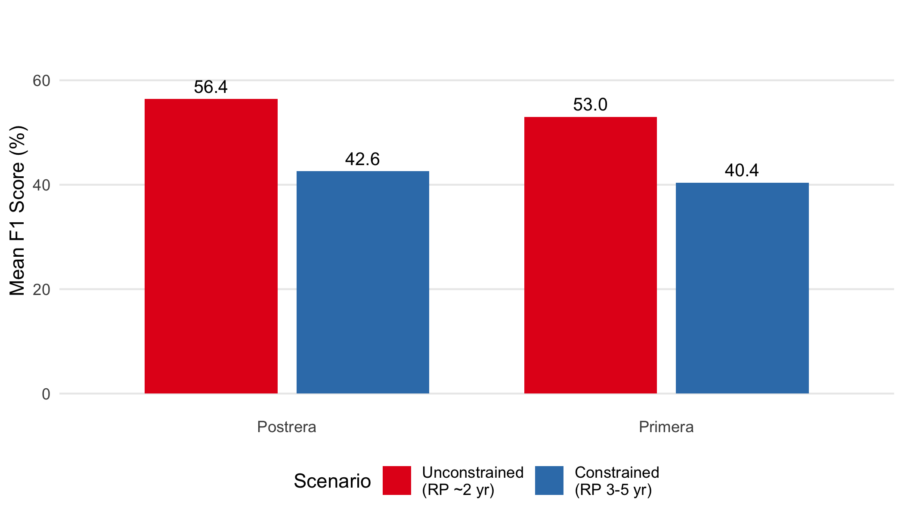
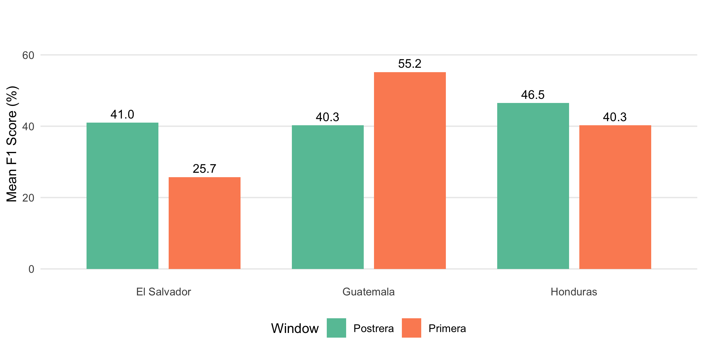
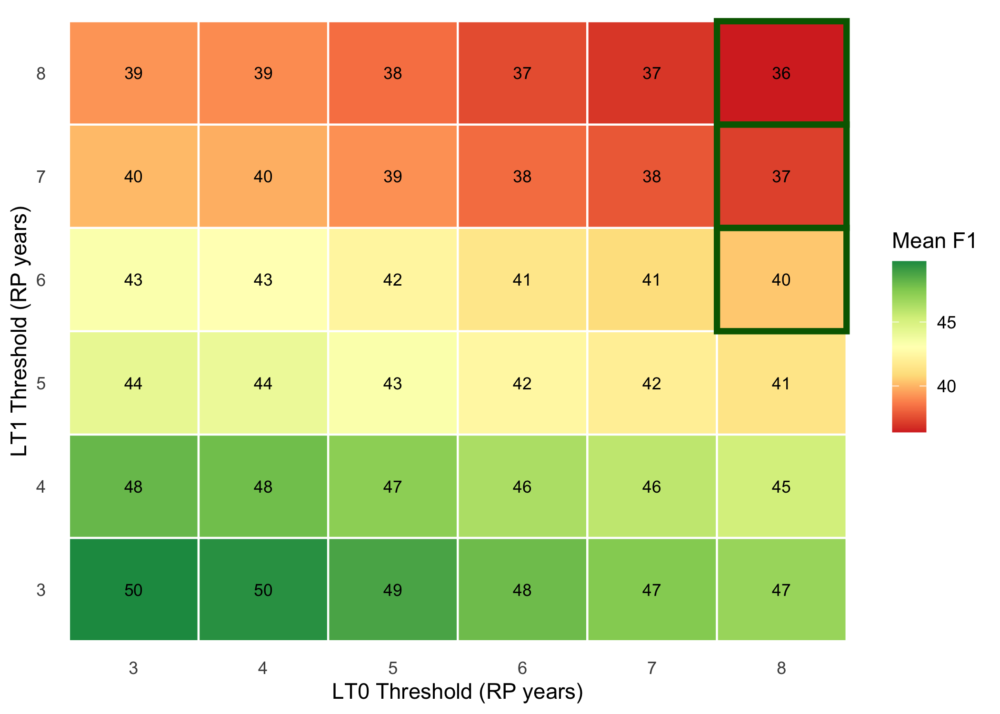

9 Threshold Optimization
9.1 Overview
This chapter explores the tradeoff between forecast skill (F1 score) and trigger frequency (combined annual return period) when selecting RP thresholds for each leadtime. The key constraint is that the same threshold must be used at each leadtime across all countries for operational consistency, while thresholds can vary between leadtimes.
We compare two scenarios:
- Unconstrained: Select thresholds that maximize F1 score without regard to trigger frequency
- Constrained: Select thresholds that maximize F1 while keeping combined annual RP in the range [3, 5] years for all countries
9.2 F1 Score by RP Threshold
First, let’s examine how F1 score varies with RP threshold for each leadtime and country. Lower RP thresholds (more sensitive) generally yield higher F1 scores but trigger more frequently.

9.3 Mean F1 Across Countries
Since operational thresholds must be consistent across countries, we need to optimize for mean F1 across all three countries at each leadtime.

9.4 The F1 vs Trigger Frequency Tradeoff
The fundamental challenge is that maximizing F1 leads to thresholds that trigger too frequently. Let’s visualize this tradeoff.

9.5 Optimization Results
9.5.1 Unconstrained Optimization
When optimizing purely for F1 score without regard to trigger frequency:
| Window | LT0 Threshold | LT1 Threshold | LT2 Threshold | Mean F1 |
|---|---|---|---|---|
| Primera (May-Aug) | RP3 | RP3 | RP3 | 0.5% |
| Postrera (Sep-Nov) | RP3 | RP3 | — | 0.6% |
With these thresholds, the combined annual RP (across all leadtimes and windows) is approximately 1.8-2.0 years — meaning the system would trigger in roughly half of all years.
9.5.2 Constrained Optimization (RP ∈ [3, 5])
When we require that all countries have a combined annual RP between 3 and 5 years:
| Window | LT0 Threshold | LT1 Threshold | LT2 Threshold | Mean F1 |
|---|---|---|---|---|
| Primera (May-Aug) | RP8 | RP6 | RP5 | 0.4% |
| Postrera (Sep-Nov) | RP6 | RP8 | — | 0.4% |
| Country | Combined Annual RP (years) |
|---|---|
| Guatemala | 3.14 |
| Honduras | 3.14 |
| El Salvador | 3.38 |
9.6 Comparison: Unconstrained vs Constrained

9.7 Per-Country F1 with Constrained Thresholds
The constrained optimal thresholds affect countries differently:

9.8 Threshold Configuration Heatmap
The following heatmap shows how different Primera threshold combinations perform, with Postrera thresholds fixed at their constrained optimum:

9.9 Summary
The optimization analysis reveals a clear tradeoff:
Unconstrained optimization selects the most sensitive thresholds (RP3 across all leadtimes), achieving F1 scores of 53% for Primera and 56% for Postrera, but triggering approximately every 2 years
Constrained optimization (RP 3-5 years) requires more conservative thresholds:
- Primera: LT0=RP8, LT1=RP6, LT2=RP5
- Postrera: LT0=RP6, LT1=RP8
This achieves F1 scores of 40.4% for Primera and 42.6% for Postrera
Country-level variation: Guatemala shows stronger Primera skill (55%) while El Salvador struggles (26%). Postrera skill is more consistent across countries (40-47%)
The RP constraint costs approximately 12-14 percentage points of F1 but ensures the trigger frequency aligns with the target 1-in-4 year return period